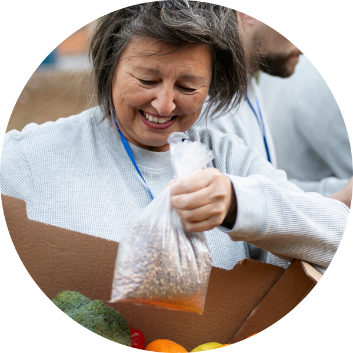

Atuamos na Luta contra a Insegurança Alimentar, Fornecendo Alimentos Mais Nutrivivos as Familias mais pobres!
O que é insegurança alimentar
A insegurança alimentar ocorre quando as pessoas não têm acesso físico, econômico ou social a alimentos suficientes, seguros e nutritivos para atender às suas necessidades diárias. Ela abrange diferentes níveis, desde a preocupação ocasional com a falta de alimentos até a falta crônica de alimentos e a desnutrição.
Porcentagem da população em insegurança alimentar por continente
Insegurança alimentar grave ou moderada
Insegurança alimentar grave ou moderada
Se inscreva para receber novidades sobre o projeto